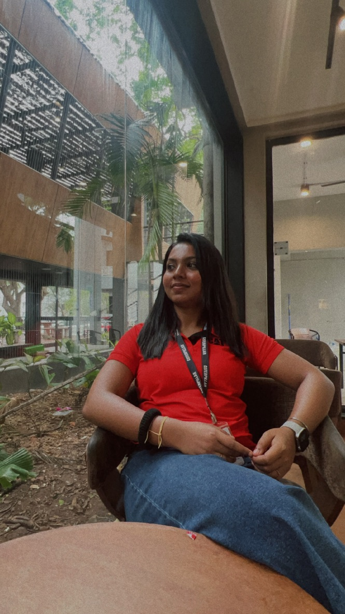
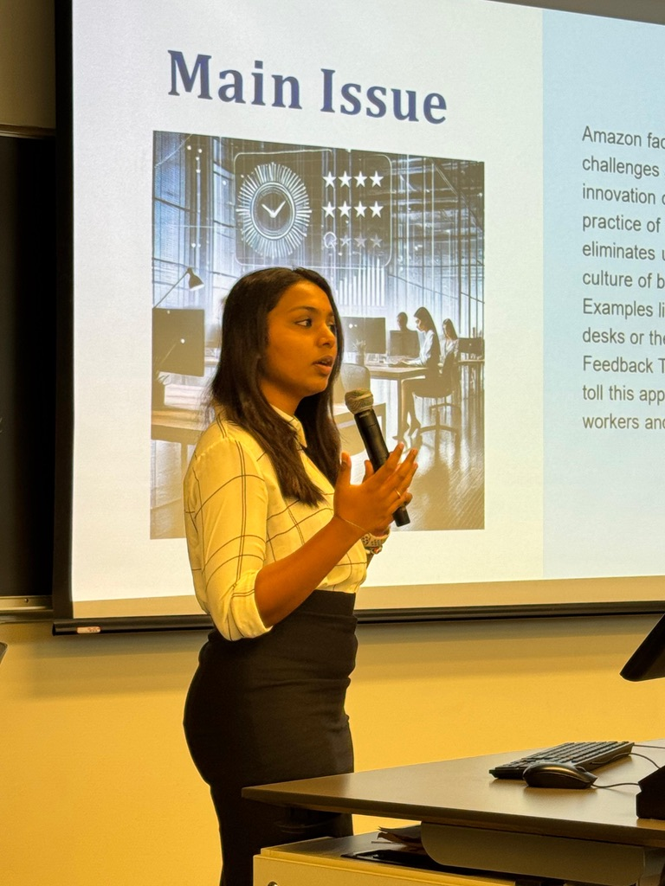

"I wear many hats! Software Developer, Software Engineer, Full Stack Developer, Back-end Developer, Data Analyst, Content Creator, Dancer, Leader—you name it! If there's another role you think I should take on, just say the word—I’m up for the challenge and more!"
🔥 Turning ideas into elegant code and challenges into milestones. I thrive in the fast lane of software development, balancing creativity and precision.
💻 Fluent in Python, Node.js, Vue.js, JavaScript, HTML, and CSS. My latest obsession? Exploring the limitless potential of AI and machine learning.
🚀 Highlights? How about building a zero-bug Linux app in just four weeks after learning Vue.js? Or mastering Node.js in a week to create REST APIs that process thousands of transactions daily?
🎯 My secret weapon: the “everything is solvable” mindset. Whether it’s R&D, cross-functional collaborations, or rapid problem-solving, I’m your go-to person for getting things done.
🌟 When I’m not knee-deep in code, you’ll find me hustling on Instagram or creating content for YouTube. Life’s too short for just one passion!
✨ Let’s team up, create something extraordinary, and make magic happen. Dive in, explore, and don’t forget to say hi!
Master of Science in Software Engineering Systems
September 2024 – December 2026
GPA: 3.7/4.0
Program Structures and Algorithm, Object Oriented Design and Structures (JAVA)
Master of Science in Software Systems (5-years integrated)
September 2018 – April 2023
GPA 3.12/4.0
Web Design, Operating Systems, Data Structures and Algorithms, Database Management Systems, Cloud Computing, Agile Development
Python, Java, JavaScript, TypeScript, Node.js, Vue.js, Java, C#, C, C++, SQLAlchemy, Sequelize
AWS (S3, API Gateway, Lambda), Azure, SQL, PostgreSQL, MySQL, NoSQL
HTML, CSS, PHP, REST API development, React, Angular, JSON, PHP
Git, GitHub, Docker, Linux, JIRA, Visual Studio, Test-Driven Development (TDD)
Caterpillar Inc, Chennai, TN
January 2023 - July 2024
Anand Rathi Wealth Services Ltd, Mumbai, MH
May 2020 - November 2020
Developed a research paper search engine using Python that scrapes data from PaperWithCode and Google Scholar. The application allows users to search for academic papers, retrieving the top 10 papers ranked by citation count, facilitating efficient access to high-quality research resources.
Key Features:
Developed a research paper search engine using Python that scrapes data from PaperWithCode and Google Scholar. The application allows users to search for academic papers, retrieving the top 10 papers ranked by citation count, facilitating efficient access to high-quality research resources.
Key Features:
Developed a comprehensive multimedia file management system that allows users to upload, access, convert, and merge various file types, including images, audio, and video. This web application enables users to manage their media files efficiently while providing functionalities such as token-based storage management, file conversion, and media merging.
Key Features: